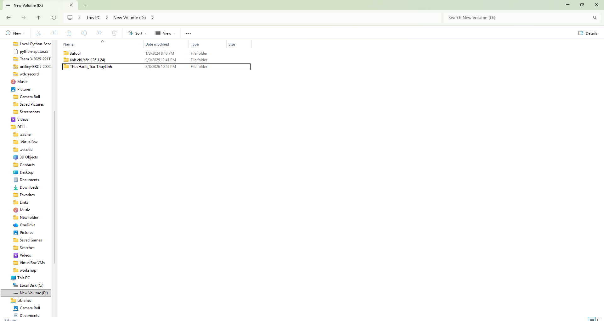
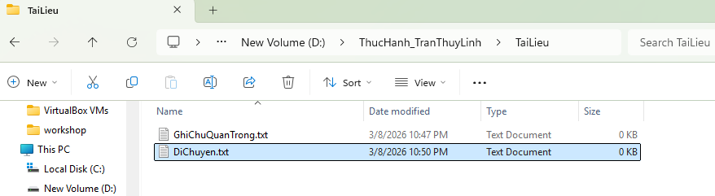
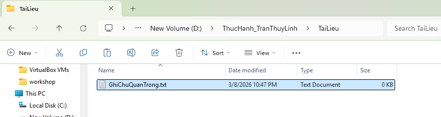
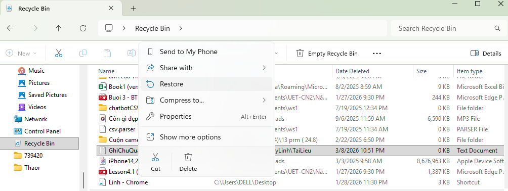
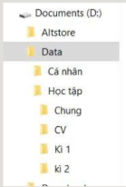

Thao Tác Cơ Bản Với Tệp Tin Và Thư Mục
📝 Nội dung hướng dẫn chi tiết (6 Bước thực hiện)
1. Mở File Explorer
Nhấn tổ hợp phím Windows + E hoặc nhấp vào biểu tượng thư mục màu vàng trên thanh tác vụ (Taskbar).

2. Truy cập ổ đĩa/thư mục
Ở cột bên trái, nhấp vào This PC, sau đó nhấp đúp vào một ổ đĩa không phải ổ hệ thống (ví dụ: ổ D: hoặc E:). Nếu chỉ có ổ C:, hãy vào thư mục Documents.
3. Tạo thư mục mới
Tại khoảng trống trong ổ đĩa/thư mục, nhấp chuột phải → chọn New → Folder. Đặt tên thư mục là "Hoc_tap".

4. Tạo tập tin văn bản
Nhấp đúp để mở thư mục "Hoc_tap". Nhấp chuột phải → chọn New → Text Document. Đặt tên tệp là "Ghi_chu".

5. Sao chép tệp tin
Nhấp chuột phải vào tệp "Ghi_chu.txt", chọn Copy (hoặc nhấn Ctrl+C). Ra ngoài Desktop, nhấp chuột phải → Paste (hoặc nhấn Ctrl+V).

6. Xóa tệp tin
Nhấp chuột phải vào tệp "Ghi_chu.txt" trên Desktop → chọn Delete (hoặc chọn tệp và nhấn phím Delete trên bàn phím).

📸 Minh chứng làm bài
Hình ảnh minh họa bước làm
Hình ảnh kết quả cuối cùng
